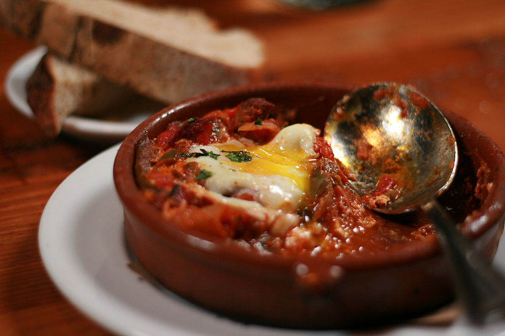

By jenly - Flickr: shakshuka, CC BY-2.0,
https://commons.wikimedia.org/w/index.php?curid=22273332
More info on wikipedia
Tasty, Delicious, Authentic Shakshuka
Description
Shakshuka is a Maghrebi dish of eggs poached in a sauce of tomatoes, olive
oil, peppers, onion and garlic, commonly spiced with cumin, paprika and
cayenne pepper. According to Joan Nathan, shakshouka originated in Ottoman
North Africa in the mid-16th century after tomatoes were introduced to the
region by Hernan Cortes as part of the Columbian exchange. For more info
click here.
Preheat the oven to 375 degrees Fahrenheit.
Warm the oil in a large, oven-safe skillet
(preferably stainless steel) over medium heat.
Once shimmering, add the onion, bell pepper, and salt.
Cook, stirring often, until the onions are tender and
turning translucent, about 4 to 6 minutes.
Add the garlic, tomato paste, cumin,
paprika and red pepper flakes. Cook, stirring
constantly, until nice and fragrant, 1 to 2 minutes.
Pour in the crushed tomatoes with their juices and add the
cilantro. Stir, and let the mixture come to a simmer.
Reduce the heat as necessary to maintain a gentle simmer,
and cook for 5 minutes to give the flavors time to meld.
Turn off the heat. Taste (careful, it’s hot), and add salt
and pepper as necessary. Use the back of a spoon to make a well
near the perimeter and crack the egg directly into it. Gently
spoon a bit of the tomato mixture over the whites to help c
ontain the egg. Repeat with the remaining 4 to 5 eggs,
depending on how many you can fit. Sprinkle a little salt
and pepper over the eggs.
Carefully transfer the skillet to the oven (it’s heavy)
and bake for 8 to 12 minutes, checking often once you reach 8 minutes.
They’re done when the egg whites are an opaque white and the yolks have
risen a bit but are still soft. They should still jiggle in the centers
when you shimmy the pan. (Keep in mind that they’ll
continue cooking after you pull the dish out of the oven.)
Using oven mitts (both hands!), transfer the hot skillet to a
heat-safe surface like the stove. Top with the crumbled feta, fresh
cilantro leaves, and more red pepper flakes,
if desired. Serve in bowls with crusty bread on the side.